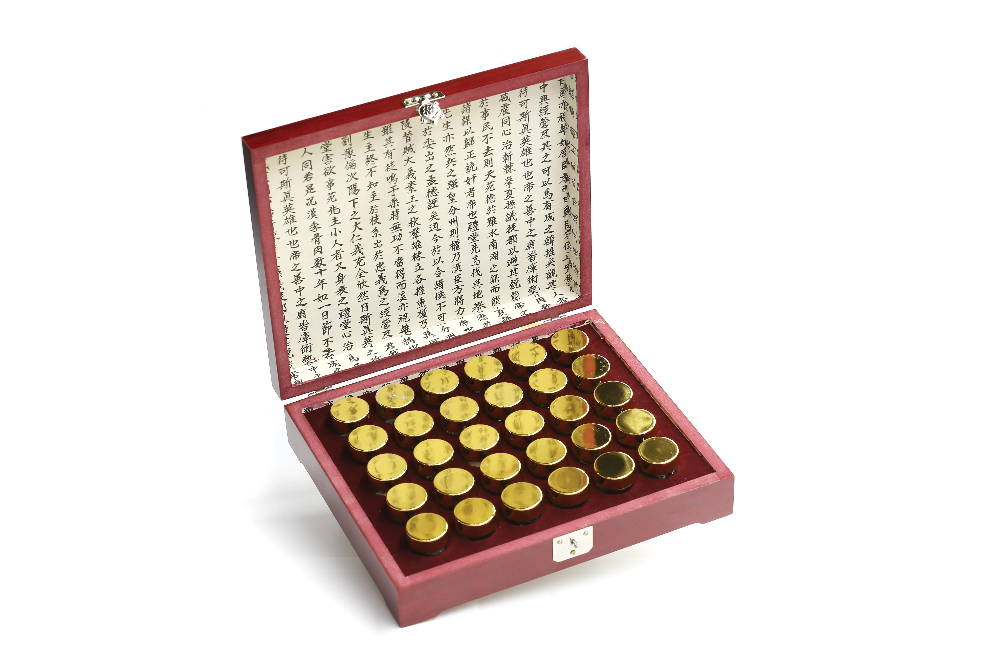
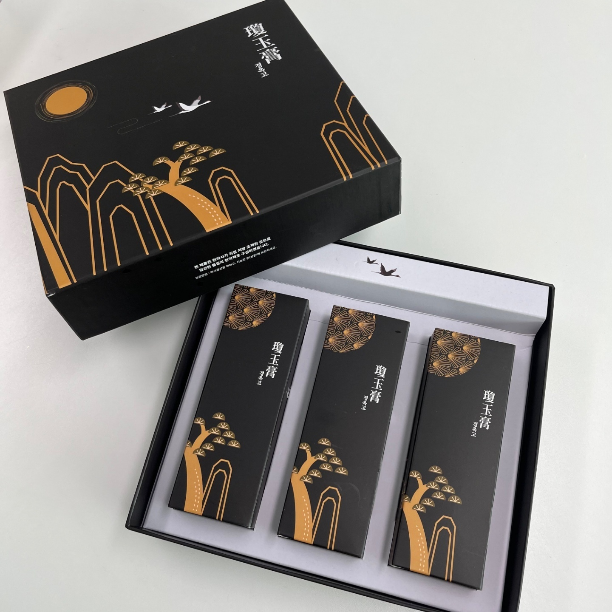
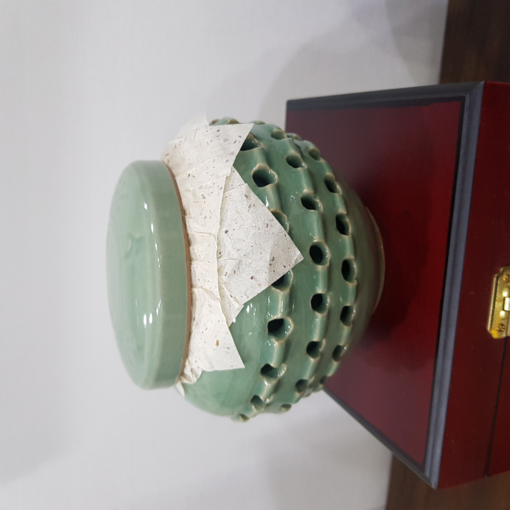

생지황, 인삼, 복령, 봉밀을 오랜 시간 정성껏 달여 체력을 돕고 호흡기를 윤택하게 하는 전통 한방 보약입니다.

씹어먹기 편한 제형

언제 어디서나 간편한 휴대용

가정에서 덜어 먹기 좋은 전통 방식
전통 방식 그대로 엄선된 약재를 정성으로 달여냅니다.
동의보감은 경옥고를 음액을 보태어 폐를 윤택하게 하고, 허로성 기침을 완화하는 처방 중 하나로 기록하고 있습니다. 예로부터 기력 저하와 소화기 약화에 널리 쓰여온 자양강장 보약입니다.
관련 연구에서 미세먼지로 인한 활성 산소를 감소시키고, 염증 세포의 침윤 억제를 통해 호흡기 보호에 도움을 줄 수 있음이 보고되었습니다.
다양한 아미노산이 포함되어 있어 운동 후 심박수 회복과 체력 증진에 도움을 줄 수 있다는 관련 연구 결과가 있습니다.
퇴행성 뇌 질환 동물모델 실험 등에서 인지 장애의 일부 완화를 돕는 뇌신경 보호 효능이 연구된 바 있습니다.
면역세포를 돕는 물질을 활성화하고 염증성 반응 물질을 감소시켜, 신체의 전반적인 방어력을 유지하는 데 도움을 줄 수 있습니다.
경옥고는 남녀노소 복용하기 좋은 보약이지만, 개인의 체질이나 평소 소화기 상태에 따라 복용 초기 속이 약간 부글거리거나 대변이 묽어지는 증상이 나타날 수 있습니다.
이는 장 기능이 조절되는 과정에서 나타날 수 있는 반응이나, 불편함이 지속된다면 복용량을 조절하거나 식후 복용으로 변경하실 수 있도록 원장님과 꼭 상담해 주시기 바랍니다.
경옥고는 만성 피로에 시달리는 직장인, 기력이 저하된 어르신, 호흡기가 약해 마른기침을 자주 하시는 분, 체력 보충이 필요한 수험생의 건강 관리에 도움을 줄 수 있습니다.
세 가지 제형 모두 들어가는 약재의 구성과 기본 효능은 동일합니다. 환은 씹어먹기 편하고, 스틱은 짜 먹는 형태로 휴대가 간편하며, 단지는 전통 방식으로 집에서 온 가족이 떠서 드시기에 좋습니다. 환자분의 라이프스타일에 맞게 선택하실 수 있습니다.
네, 가능합니다. 직접 내원이 어려우신 경우 전화 상담을 통해 원장님께서 환자분의 건강 상태를 꼼꼼히 문진한 후 체질에 맞게 처방하여 자택으로 발송해 드립니다.